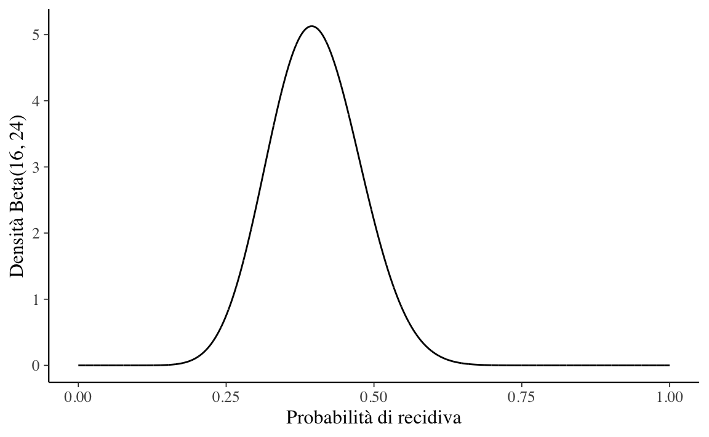

Capitolo 13 Distribuzioni di v.c. continue
Dopo avere introdotto con una simulazione il concetto di funzione di densità nel Capitolo ??, prendiamo ora in esame alcune delle densità di probabilità più note. La più importante di esse è sicuramente la distribuzione Normale.
13.1 Distribuzione Normale
Non c’è un’unica distribuzione Normale, ma ce ne sono molte. Tali distribuzioni sono anche dette “gaussiane” in onore di Carl Friedrich Gauss (uno dei più grandi matematici della storia il quale, tra le altre cose, scoprì l’utilità di tale funzione di densità per descrivere gli errori di misurazione). Adolphe Quetelet, il padre delle scienze sociali quantitative, fu il primo ad applicare tale densità alle misurazioni dell’uomo. Karl Pearson usò per primo il termine “distribuzione Normale” anche se ammise che questa espressione “ha lo svantaggio di indurre le persone a credere che le altre distribuzioni, in un senso o nell’altro, non siano normali.”
13.1.1 Limite delle distribuzioni binomiali
Iniziamo con un un breve excursus storico. Nel 1733, Abraham de Moivre notò che, aumentando il numero di prove in una distribuzione binomiale, la distribuzione risultante diventava quasi simmetrica e a forma campanulare. Con 10 prove e una probabilità di successo di 0.9 in ciascuna prova, la distribuzione è chiaramente asimmetrica.
N <- 10
x <- 0:10
y <- dbinom(x, N, 0.9)
binomial_limit_plot <-
tibble(x = x, y = y) %>%
ggplot(aes(x = x, y = y)) +
geom_bar(
stat = "identity", color = "black", size = 0.2
) +
xlab("y") +
scale_x_continuous(breaks = c(0, 2, 4, 6, 8, 10)) +
ylab("Binomial(y | 10, 0.9)")
binomial_limit_plot
FIGURA 13.1: Probabilità del numero di successi in \(N = 10\) prove bernoulliane indipendenti, ciascuna con una probabilità di successo di 0.90. Il risultato è una distribuzione \(\Bin(y \mid 10, 0.9)\). Con solo dieci prove, la distribuzione è fortemente asimmetrica negativa.
Ma se aumentiamo il numero di prove di un fattore di 100 a N = 1000, senza modificare la probabilità di successo di 0.9, la distribuzione assume una forma campanulare quasi simmetrica. Dunque, de Moivre scoprì che, quando N è grande, la funzione Normale (che introdurremo qui sotto), nonostante sia la densità di v.a. continue, fornisce una buona approssimazione alla funzione di massa di probabilità binomiale.
N <- 1000
x <- 0:1000
y <- dbinom(x, N, 0.9)
binomial_limit_plot <-
tibble(x = x, y = y) %>%
ggplot(aes(x = x, y = y)) +
geom_bar(stat = "identity", color = "black", size = 0.2) +
xlab("y") +
ylab("Binomial(y | 1000, 0.9)") +
xlim(850, 950)
binomial_limit_plotFIGURA 13.2: Probabilità del numero di successi in \(N = 1000\) prove bernoulliane indipendenti, ciascuna con una probabilità di successo di 0.90. Il risultato è una distribuzione \(\Bin(y \mid 1000, 0.9)\). Con mille prove, la distribuzione è quasi simmetrica a forma campanulare.
La distribuzione Normale fu scoperta da Gauss nel 1809. Il Paragrafo successivo illustra come si possa giungere alla Normale mediante una simulazione.
13.2 La Normale prodotta con una simulazione
McElreath (2020) presenta un esempio che illustra come sia possibile giungere alla distribuzione Normale mediante una simulazione. Supponiamo che vi siano mille persone tutte allineate su una linea di partenza. Quando viene dato un segnale, ciascuna persona lancia una moneta e fa un passo in avanti oppure all’indietro a seconda che sia uscita testa o croce. Supponiamo che la lunghezza di ciascun passo vari da 0 a 1 metro. Ciascuna persona lancia una moneta 16 volte e dunque compie 16 passi.
Alla conclusione di queste passeggiate casuali (random walk) non possiamo sapere con esattezza dove si troverà ciascuna persona, ma possiamo conoscere con certezza le caratteristiche della distribuzione delle mille distanze dall’origine. Per esempio, possiamo predire in maniera accurata la proporzione di persone che si sono spostate in avanti oppure all’indietro. Oppure, possiamo predire accuratamente la proporzione di persone che si troveranno ad una certa distanza dalla linea di partenza (es., a 1.5 m dall’origine).
Queste predizioni sono possibili perché tali distanze si distribuiscono secondo la legge Normale. È facile simulare questo processo usando . I risultati della simulazione sono riportati nella figura 13.3.
pos <-
replicate(100, runif(16, -1, 1)) %>%
as_tibble() %>%
rbind(0, .) %>%
mutate(step = 0:16) %>%
gather(key, value, -step) %>%
mutate(person = rep(1:100, each = 17)) %>%
group_by(person) %>%
mutate(position = cumsum(value)) %>%
ungroup()
ggplot(
data = pos,
aes(x = step, y = position, group = person)
) +
geom_vline(xintercept = c(4, 8, 16), linetype = 2) +
geom_line(aes(color = person < 2, alpha = person < 2)) +
scale_color_manual(values = c("gray", "black")) +
scale_alpha_manual(values = c(1 / 5, 1)) +
scale_x_continuous(
"Numero di passi",
breaks = c(0, 4, 8, 12, 16)
) +
labs(y = "Posizione") +
theme(legend.position = "none")
FIGURA 13.3: Passeggiata casuale di 4, 8 e 16 passi. La spezzata nera indica la media delle distanze dall’origine come funzione del numero di passi.
Un kernel density plot delle distanze ottenute dopo 4, 8 e 16 passi è riportato nella figura 13.4. Nel pannello di destra, al kernel density plot è stata sovrapposta una densità Normale di opportuni parametri (linea tratteggiata).
p1 <-
pos %>%
filter(step == 4) %>%
ggplot(aes(x = position)) +
geom_line(stat = "density", color = "black") +
labs(title = "4 passi")
p2 <-
pos %>%
filter(step == 8) %>%
ggplot(aes(x = position)) +
geom_density(color = "black", outline.type = "full") +
labs(title = "8 passi")
sd <-
pos %>%
filter(step == 16) %>%
summarise(sd = sd(position)) %>%
pull(sd)
p3 <-
pos %>%
filter(step == 16) %>%
ggplot(aes(x = position)) +
stat_function(
fun = dnorm,
args = list(mean = 0, sd = sd),
linetype = 2
) +
geom_density(color = "black", alpha = 1 / 2) +
labs(
title = "16 passi",
y = "Densità"
)
(p1 | p2 | p3) & coord_cartesian(xlim = c(-6, 6))
FIGURA 13.4: Kernel density plot dei risultati della passeggiata casuale riportata nella figura precente, dopo 4, 8 e 16 passi. Nel pannello di destra, una densità Normale di opportuni parametri è sovrapposta all’istogramma lisciato.
Questa simulazione mostra che qualunque processo nel quale viene sommato un certo numero di valori casuali, tutti provenienti dalla medesima distribuzione, converge ad una distribuzione Normale. Non importa quale sia la forma della distribuzione di partenza: essa può essere uniforme, come nell’esempio presente, o di qualunque altro tipo. La forma della distribuzione da cui viene realizzato il campionamento determina la velocità della convergenza alla Normale. In alcuni casi la convergenza è lenta; in altri casi la convergenza è molto rapida (come nell’esempio presente).
Da un punto di vista formale, diciamo che una variabile casuale continua \(Y\) ha una distribuzione Normale se la sua densità è
\[\begin{equation} f(y; \mu, \sigma) = {1 \over {\sigma\sqrt{2\pi} }} \exp \left\{-\frac{(y - \mu)^2}{2 \sigma^2} \right\}, \tag{13.1} \end{equation}\]
dove \(\mu \in \mathbb{R}\) e \(\sigma > 0\) sono i parametri della distribuzione.
La densità normale è unimodale e simmetrica con una caratteristica forma a campana e con il punto di massima densità in corrispondenza di \(\mu\).
Il significato dei parametri \(\mu\) e \(\sigma\) che appaiono nella (13.1) viene chiarito dalla dimostrazione che
\[\begin{equation} \mathbb{E}(X) = \mu, \qquad \mathbb{V}(X) = \sigma^2. \end{equation}\]
La rappresentazione grafica di quattro densità Normali tutte con media 0 e con deviazioni standard 0.25, 0.5, 1 e 2 è fornita nella figura 13.5.
FIGURA 13.5: Alcune distribuzioni Normali.
13.2.1 Concentrazione
È istruttivo osservare il grado di concentrazione della distribuzione Normale attorno alla media:
\[\begin{align} P(\mu - \sigma < X < \mu + \sigma) &= P (-1 < Z < 1) \simeq 0.683, \notag\\ P(\mu - 2\sigma < X < \mu + 2\sigma) &= P (-2 < Z < 2) \simeq 0.956, \notag\\ P(\mu - 3\sigma < X < \mu + 3\sigma) &= P (-3 < Z < 3) \simeq 0.997. \notag \end{align}\]
Si noti come un dato la cui distanza dalla media è superiore a 3 volte la deviazione standard presenti un carattere di eccezionalità perché meno del 0.3% dei dati della distribuzione Normale presentano questa caratteristica.
Per indicare la distribuzione Normale si usa la notazione \(\mathcal{N}(\mu, \sigma)\).
13.2.2 Funzione di ripartizione
Il valore della funzione di ripartizione di \(Y\) nel punto \(y\) è l’area sottesa alla curva di densità \(f(y)\) nella semiretta \((-\infty, y]\). Non esiste alcuna funzione elementare per la funzione di ripartizione
\[\begin{equation} F(y) = \int_{-\infty}^y {1 \over {\sigma\sqrt{2\pi} }} \exp \left\{-\frac{(y - \mu)^2}{2\sigma^2} \right\} dy, \end{equation}\]
pertanto le probabilità \(P(Y < y)\) vengono calcolate mediante integrazione numerica approssimata. I valori della funzione di ripartizione di una variabile casuale Normale sono dunque forniti da un software.
Esercizio 13.1 Usiamo per calcolare la funzione di ripartizione della Normale. La funzione pnorm(q, mean, sd) restituisce la funzione di ripartizione della Normale con media mean e deviazione standard sd, ovvero l’area sottesa alla funzione di densità di una Normale con media mean e deviazione standard sd nell’intervallo \([-\infty, q]\).
Per esempio, in precedenza abbiamo detto che il 68% circa dell’area sottesa ad una Normale è compresa nell’intervallo \(\mu \pm \sigma\). Verifichiamo per la distribuzione del QI \(\sim \mathcal{N}(\mu = 100, \sigma = 15)\):
pnorm(100+15, 100, 15) - pnorm(100-15, 100, 15)
#> [1] 0.6826895Il 95% dell’area è compresa nell’intervallo \(\mu \pm 1.96 \cdot\sigma\):
pnorm(100 + 1.96 * 15, 100, 15) - pnorm(100 - 1.96 * 15, 100, 15)
#> [1] 0.9500042Quasi tutta la distribuzione è compresa nell’intervallo \(\mu \pm 3 \cdot\sigma\):
pnorm(100 + 3 * 15, 100, 15) - pnorm(100 - 3 * 15, 100, 15)
#> [1] 0.997300213.2.3 Distribuzione Normale standard
La distribuzione Normale di parametri \(\mu = 0\) e \(\sigma = 1\) viene detta distribuzione Normale standard. La famiglia Normale è l’insieme avente come elementi tutte le distribuzioni Normali con parametri \(\mu\) e \(\sigma\) diversi. Tutte le distribuzioni Normali si ottengono dalla Normale standard mediante una trasformazione lineare: se \(Y \sim \mathcal{N}(\mu_Y, \sigma_Y)\) allora
\[\begin{equation} X = a + b Y \sim \mathcal{N}(\mu_X = a+b \mu_Y, \sigma_X = \left|b\right|\sigma_Y). \end{equation}\]
L’area sottesa alla curva di densità di \(\mathcal{N}(\mu, \sigma)\) nella semiretta \((-\infty, y]\) è uguale all’area sottesa alla densità Normale standard nella semiretta \((-\infty, z]\), in cui \(z = (y -\mu_Y )/\sigma_Y\) è il punteggio standard di \(Y\). Per la simmetria della distribuzione, l’area sottesa nella semiretta \([1, \infty)\) è uguale all’area sottesa nella semiretta \((-\infty, 1]\) e quest’ultima coincide con \(F(-1)\). Analogamente, l’area sottesa nell’intervallo \([y_a, y_b]\), con \(y_a < y_b\), è pari a \(F(z_b) - F(z_a)\), dove \(z_a\) e \(z_b\) sono i punteggi standard di \(y_a\) e \(y_b\).
Si ha anche il problema inverso rispetto a quello del calcolo delle aree: dato un numero \(0 \leq p \leq 1\), il problema è quello di determinare un numero \(z \in \mathbb{R}\) tale che \(P(Z < z) = p\). Il valore \(z\) cercato è detto quantile di ordine \(p\) della Normale standard e può essere trovato mediante un software.
Esercizio 13.2 Supponiamo che l’altezza degli individui adulti segua la distribuzione Normale di media \(\mu = 1.7\) m e deviazione standard \(\sigma = 0.1\) m. Vogliamo sapere la proporzione di individui adulti con un’altezza compresa tra \(1.7\) e \(1.8\) m.
Il problema ci chiede di trovare l’area sottesa alla distribuzione \(\mathcal{N}(\mu = 1.7, \sigma = 0.1)\) nell’intervallo \([1.7, 1.8]\):
df <- tibble(x = seq(1.4, 2.0, length.out = 100)) %>%
mutate(y = dnorm(x, mean = 1.7, sd = 0.1))
ggplot(df, aes(x, y)) +
geom_area(fill = "sky blue") +
gghighlight(x < 1.8 & x > 1.7) +
labs(
x = "Altezza",
y = "Densità"
)
La risposta si trova utilizzando la funzione di ripartizione \(F(X)\) della legge \(\mathcal{N}(1.7, 0.1)\) in corrispondenza dei due valori forniti dal problema: \(F(X = 1.8) - F(X = 1.7)\). Utilizzando la seguente istruzione
pnorm(1.8, 1.7, 0.1) - pnorm(1.7, 1.7, 0.1)
#> [1] 0.3413447otteniamo il \(31.43\%\).
In maniera equivalente, possiamo standardizzare i valori che delimitano l’intervallo considerato e utilizzare la funzione di ripartizione della normale standardizzata. I limiti inferiore e superiore dell’intervallo sono
\[ z_{\text{inf}} = \frac{1.7 - 1.7}{0.1} = 0, \quad z_{\text{sup}} = \frac{1.8 - 1.7}{0.1} = 1.0, \]
quindi otteniamo
pnorm(1.0, 0, 1) - pnorm(0, 0, 1)
#> [1] 0.3413447Il modo più semplice per risolvere questo problema resta comunque quello di rendersi conto che la probabilità richiesta non è altro che la metà dell’area sottesa dalle distribuzioni Normali nell’intervallo \([\mu - \sigma, \mu + \sigma]\), ovvero \(0.683/2\).
13.2.3.1 Funzione di ripartizione della normale standard e funzione logistica
Si noti che la funzione logistica (in blu), pur essendo del tutto diversa dalla Normale dal punto di vista formale, assomiglia molto alla Normale standard quando le due cdf hanno la stessa varianza.
tibble(x = c(-3, 3)) %>%
ggplot(aes(x = x)) +
stat_function(fun = pnorm) +
stat_function(
fun = plogis,
args = list(scale = 0.56)
)
13.3 Teorema del limite centrale
Laplace dimostrò il teorema del limite centrale (TLC) nel 1812. Il TLC ci dice che se prendiamo una sequenza di variabili casuali indipendenti e le sommiamo, tale somma tende a distribuirsi come una Normale. Il TLC specifica inoltre, sulla base dei valori attesi e delle varianze delle v.c. che vengono sommate, quali saranno i parametri della distribuzione Normale così ottenuta.
Teorema 13.1 Si supponga che \(Y = Y_1, Y_2, \ldots, Y_N\) sia una sequenza di v.a. i.i.d. con \(\mathbb{E}(Y_n) = \mu\) e \(\mbox{SD}(Y_n) = \sigma\). Si definisca una nuova v.c. come la media di \(Y\):
\[ Z = \frac{1}{N} \sum_{n=1}^N Y_n. \]
Con \(N \rightarrow \infty\), \(Z\) tenderà ad una Normale con lo stesso valore atteso di \(Y_n\) e una deviazione standard che sarà più piccola della deviazione standard originaria di un fattore pari a \(\sqrt{\frac{1}{\sqrt{N}}}\):
\[\begin{equation} p_Z(z) \rightarrow \mathcal{N}\left(z \ \Bigg| \ \mu, \, \frac{1}{\sqrt{N}} \cdot \sigma \right). \end{equation}\]
Il TLC può essere generalizzato a variabili che non hanno la stessa distribuzione purché siano indipendenti e abbiano aspettative e varianze finite.
Molti fenomeni naturali, come l’altezza dell’uomo adulto di entrambi i sessi, sono il risultato di una serie di effetti additivi relativamente piccoli, la cui combinazione porta alla normalità, indipendentemente da come gli effetti additivi sono distribuiti. In pratica, questo è il motivo per cui la distribuzione normale ha senso come rappresentazione di molti fenomeni naturali.
13.4 Distribuzione Chi-quadrato
Dalla Normale deriva la distribuzione \(\chi^2\). La distribuzione \(\chi^2_{~k}\) con \(k\) gradi di libertà descrive la variabile casuale
\[ Z_1^2 + Z_2^2 + \dots + Z_k^2, \]
dove \(Z_1, Z_2, \dots, Z_k\) sono variabili casuali i.i.d. con distribuzione Normale standard \(\mathcal{N}(0, 1)\). La variabile casuale chi-quadrato dipende dal parametro intero positivo \(\nu = k\) che ne identifica il numero di gradi di libertà. La densità di probabilità di \(\chi^2_{~\nu}\) è
\[ f(x) = C_{\nu} x^{\nu/2-1} \exp (-x/2), \qquad \text{se } x > 0, \]
dove \(C_{\nu}\) è una costante positiva.
La figura 13.6 mostra alcune distribuzioni Chi-quadrato variando il parametro \(\nu\).
FIGURA 13.6: Alcune distribuzioni Chi-quadrato.
13.4.1 Proprietà
La distribuzione di densità \(\chi^2_{~\nu}\) è asimmetrica.
Il valore atteso di una variabile \(\chi^2_{~\nu}\) è uguale a \(\nu\).
La varianza di una variabile \(\chi^2_{~\nu}\) è uguale a \(2\nu\).
Per \(k \rightarrow \infty\), la \(\chi^2_{~\nu} \rightarrow \mathcal{N}\).
Se \(X\) e \(Y\) sono due variabili casuali chi-quadrato indipendenti con \(\nu_1\) e \(\nu_2\) gradi di libertà, ne segue che \(X + Y \sim \chi^2_m\), con \(m = \nu_1 + \nu_2\). Tale principio si estende a qualunque numero finito di variabili casuali chi-quadrato indipendenti.
Esercizio 13.3 Usiamo \(\mathsf{R}\) per disegnare la densità chi-quadrato con 3 gradi di libertà dividendo l’area sottesa alla curva di densità in due parti uguali.
df <- tibble(x = seq(0, 15.0, length.out = 100)) %>%
mutate(y = dchisq(x, 3))
ggplot(df, aes(x, y)) +
geom_area(fill = "sky blue") +
gghighlight(x < 3) +
labs(
x = "V.a. chi-quadrato con 3 gradi di libertà",
y = "Densità"
)
13.5 Distribuzione \(t\) di Student
Dalle distribuzioni Normale e Chi quadrato deriva un’altra distribuzione molto nota, la \(t\) di Student. Se \(Z \sim \mathcal{N}\) e \(W \sim \chi^2_{~\nu}\) sono due variabili casuali indipendenti, allora il rapporto
\[\begin{equation} T = \frac{Z}{\Big( \frac{W}{\nu}\Big)^{\frac{1}{2}}} \end{equation}\]
definisce la distribuzione \(t\) di Student con \(\nu\) gradi di libertà. Si usa scrivere \(T \sim t_{\nu}\). L’andamento della distribuzione \(t\) di Student è simile a quello della distribuzione Normale, ma ha una maggiore dispersione (ha le code più pesanti di una Normale, ovvero ha una varianza maggiore di 1).
La figura 13.7 mostra alcune distribuzioni \(t\) di Student variando il parametro \(\nu\).
FIGURA 13.7: Alcune distribuzioni \(t\) di Student.
13.5.1 Proprietà
La variabile casuale \(t\) di Student soddisfa le seguenti proprietà:
Per \(\nu \rightarrow \infty\), \(t_{\nu}\) tende alla normale standard \(\mathcal{N}(0, 1)\).
La densità della \(t_{\nu}\) è una funzione simmetrica con valore atteso nullo.
Per \(\nu > 2\), la varianza della \(t_{\nu}\) vale \(\nu/(\nu - 2)\); pertanto è sempre maggiore di 1 e tende a 1 per \(\nu \rightarrow \infty\).
13.6 Funzione beta
La funzione beta di Eulero è una funzione matematica, non una densità di probabilità. La menzioniamo qui perché viene utilizzata nella distribuzione Beta. La funzione beta si può scrivere in molti modi diversi; per i nostri scopi la scriveremo così:
\[\begin{equation} B(\alpha, \beta) = \frac{\Gamma(\alpha)\Gamma(\beta)}{\Gamma(\alpha + \beta)}\,, \end{equation}\]
dove \(\Gamma(x)\) è la funzione Gamma, ovvero il fattoriale discendente, cioè
\[\begin{equation} (x-1)(x-2)\ldots (x-n+1)\notag\,. \end{equation}\]
Per esempio, posti \(\alpha = 3\) e \(\beta = 9\), la funzione beta assume il valore
alpha <- 3
beta <- 9
beta(alpha, beta)
#> [1] 0.002020202Per chiarire, lo stesso risultato si ottiene con
((2) * (8 * 7 * 6 * 5 * 4 * 3 * 2)) /
(11 * 10 * 9 * 8 * 7 * 6 * 5 * 4 * 3 * 2)
#> [1] 0.002020202ovvero
gamma(alpha) * gamma(beta) / gamma(alpha + beta)
#> [1] 0.00202020213.7 Distribuzione Beta
Una distribuzione che viene usata per modellare percentuali e proporzioni è la distribuzione Beta in quanto è definita sull’intervallo \((0; 1)\) – ma non include i valori 0 o 1. Una definizione formale è la seguente.
Definizione 13.1 Sia \(\pi\) una variabile casuale che può assumere qualsiasi valore compreso tra 0 e 1, cioè \(\pi \in [0, 1]\). Diremo che \(\pi\) segue la distribuzione Beta di parametri \(\alpha\) e \(\beta\), \(\pi \sim \text{Beta}(\alpha, \beta)\), se la sua densità è
\[\begin{align} \text{Beta}(\pi \mid \alpha, \beta) &= \frac{1}{B(\alpha, \beta)}\pi^{\alpha-1} (1-\pi)^{\beta-1}\notag\\ &= \frac{\Gamma(\alpha+ \beta)}{\Gamma(\alpha)\Gamma(\beta)}\pi^{\alpha-1} (1-\pi)^{\beta-1} \quad \text{per } \pi \in [0, 1]\,, \tag{13.2} \end{align}\]
laddove \(B(\alpha, \beta)\) è la funzione beta.
I termini \(\alpha\) e \(\beta\) sono i parametri della distribuzione Beta e devono essere entrambi positivi. Tali parametri possono essere interpretati come l’espressione delle nostre credenze a priori relative ad una sequenza di prove Bernoulliane Il parametro \(\alpha\) rappresenta il numero di “successi” e il parametro \(\beta\) il numero di “insuccessi”:
\[\begin{equation} \frac{\text{Numero di successi}}{\text{Numero di successi} + \text{Numero di insuccessi}} = \frac{\alpha}{\alpha + \beta}\notag\,. \end{equation}\]
Il rapporto \(\frac{1}{B(\alpha, \beta)} = \frac{\Gamma(\alpha+b)}{\Gamma(\alpha)\Gamma(\beta)}\) è una costante di normalizzazione:
\[\begin{equation} \int_0^1 \pi^{\alpha-1} (1-\pi)^{\beta-1} = \frac{\Gamma(\alpha+b)}{\Gamma(\alpha)\Gamma(\beta)}\,. \end{equation}\]
Ad esempio, con \(\alpha = 3\) e \(\beta = 9\) abbiamo
a <- 3
b <- 9
integrand <- function(p) {p^{a - 1}*(1 - p)^{b - 1}}
integrate(integrand, lower = 0, upper = 1)
#> 0.002020202 with absolute error < 2.2e-17ovvero
1 / (gamma(a + b) / (gamma(a) * gamma(b)))
#> [1] 0.002020202ovvero
beta(alpha, beta)
#> [1] 0.002020202Il valore atteso, la moda e la varianza di una distribuzione Beta sono dati dalle seguenti equazioni:
\[\begin{equation} \mathbb{E}(\pi) = \frac{\alpha}{\alpha+\beta}\,, \tag{13.3} \end{equation}\]
\[\begin{equation} \mbox{Mo}(\pi) = \frac{\alpha-1}{\alpha+\beta-2}\,, \tag{13.4} \end{equation}\]
\[\begin{equation} \mathbb{V}(\pi) = \frac{\alpha \beta}{(\alpha+\beta)^2 (\alpha+\beta+1)}\,. \tag{13.5} \end{equation}\]
Al variare di \(\alpha\) e \(\beta\) si ottengono molte distribuzioni di forma diversa; un’illustrazione è fornita dalla seguente GIF animata. Si può ottenere una rappresentazione grafica della distribuzione \(\mbox{Beta}(\pi \mid \alpha, \beta)\) con la funzione plot_beta() del pacchetto bayesrules. Per esempio:
{kind=link}
bayesrules::plot_beta(alpha = 3, beta = 9)
La funzione bayesrules::summarize_beta() ci restituisce la media, moda e varianza della distribuzione Beta. Per esempio:
bayesrules::summarize_beta(alpha = 3, beta = 9)
#> mean mode var sd
#> 1 0.25 0.2 0.01442308 0.1200961Osservazione. Attenzione alle parole: in questo contesto, il termine “beta” viene utilizzato con tre significati diversi:
- la distribuzione di densità Beta,
- la funzione matematica beta,
- il parametro \(\beta\).
Esercizio 13.4 Nel disturbo depressivo la recidiva è definita come la comparsa di un nuovo episodio depressivo che si manifesta dopo un prolungato periodo di recupero (6-12 mesi) con stato di eutimia (umore relativamente normale). Supponiamo che una serie di studi mostri una comparsa di recidiva in una proporzione che va dal 20% al 60% dei casi, con una media del 40% (per una recente discussione, si veda Nuggerud-Galeas et al. 2020). Sulla base di queste ipotetiche informazioni, è possibile usare la distribuzione Beta per rappresentare le nostre credenze a priori relativamente alla probabilità di recidiva. Per fare questo dobbiamo trovare i parametri della distribuzione Beta tali per cui la massa della densità sia compresa tra 0.2 e 0.6, con la media in corrispondenza di 0.4. Procedendo per tentativi ed errori, ed usando la funzione bayesrules::plot_beta(), un risultato possibile è \(\Beta(16, 24)\).
La funzione find_pars() prende in input la media e \(\alpha + \beta\), ritorna i valori dei parametri:
find_pars <- function(ev, n) {
a <- ev * n
b <- n - a
return(c(round(a), round(b)))
}
pars <- find_pars(.4, 40)
pars
#> [1] 16 24
bayesrules::plot_beta(pars[1], pars[2])Verifichiamo il valore della media della distribuzione:
16 / (16 + 24)
#> [1] 0.4La moda è
(16 - 1) / (16 + 24 - 2)
#> [1] 0.3947368La deviazione standard della distribuzione è uguale a circa 8 punti percentuali:
sqrt((16 * 24) / ((16 + 24)^2 * (16 + 24 + 1)))
#> [1] 0.07650921Gli stessi risultati si ottengono usando la funzione bayesrules::summarize_beta():
bayesrules::summarize_beta(alpha = 16, beta = 24)
#> mean mode var sd
#> 1 0.4 0.3947368 0.005853659 0.07650921Possiamo concludere dicendo che, se utilizziamo la distribuzione \(\mbox{Beta}(16, 24)\) per rappresentare le nostre credenze (a priori) rispetto la possibilità di recidiva, ciò significa che pensiamo che la nostra incertezza sia quantificabile nei termini di una deviazione standard di circa 8 punti percentuali rispetto a tutti i valori possibili di recidiva, per i quali il valore più verosimile (ovvero, la media della distribuzione) è 0.40.
Esercizio 13.5 Poniamoci ora il problema di verificare la nostra comprensione delle funzioni \(\R\) che possono essere usate per la funzione Beta. Continuiamo con l’esercizio precedente e utilizziamo i seguenti parametri per la distribuzione Beta:
alpha <- 16
beta <- 24La media di una \(\mbox{Beta}(16, 24)\) è
alpha / (alpha + beta)
#> [1] 0.4In corrispondenza della media la densità della funzione è
dbeta(pi, alpha, beta)
#> [1] 0ovvero
gamma(alpha + beta) / (gamma(alpha) * gamma(beta)) *
pi^(alpha - 1) * (1 - pi)^(beta - 1)
#> [1] -6.99499e+26Usando la funzione dbeta() possiamo costruire un grafico della funzione \(\mbox{Beta}(16, 24)\) nel modo seguente:
x <- seq(0, 1, length.out = 1e4)
tibble(x) %>%
ggplot(aes(x, dbeta(x, alpha, beta))) +
geom_line() +
labs(
x = "Probabilità di recidiva",
y = "Densità Beta(16, 24)"
)
13.8 Distribuzione di Cauchy
La distribuzione di Cauchy è un caso speciale della distribuzione di \(t\) di Student con 1 grado di libertà. È definita da una densità di probabilità che corrisponde alla funzione, dipendente da due parametri \(\theta\) e \(d\) (con la condizione \(d > 0\)),
\[\begin{equation} f(x; \theta, d) = \frac{1}{\pi d} \frac{1}{1 + \left(\frac{x - \theta}{d} \right)^2}, \end{equation}\]
dove \(\theta\) è la mediana della distribuzione e \(d\) ne misura la larghezza a metà altezza.
13.9 Distribuzione log-normale
Sia \(y\) una variabile casuale avente distribuzione normale con media \(\mu\) e varianza \(\sigma^2\). Definiamo poi una nuova variabile casuale \(x\) attraverso la relazione
\[ x = e^y \quad \Longleftrightarrow \quad y = \log x. \] Il dominio di definizione della \(x\) è il semiasse \(x > 0\) e la densità di probabilità \(f(x)\) è data da
\[\begin{equation} f(x) = \frac{1}{\sigma \sqrt{2 \pi}} \frac{1}{x} \exp \left\{-\frac{(\log x - \mu)^2}{2 \sigma^2} \right\}. \end{equation}\]
Questa funzione di densità si chiama log-normale.
Il valore atteso e la varianza di una distribuzione log-normale sono dati dalle seguenti equazioni:
\[\begin{equation} \mathbb{E}(x) = \exp \left\{\mu + \frac{\sigma^2}{2} \right\}. \end{equation}\]
\[\begin{equation} \mathbb{V}(x) = \exp \left\{2 \mu + \sigma^2 \right\} \left(\exp \left\{\sigma^2 \right\} -1\right). \end{equation}\]
Si può dimostrare che il prodotto di variabili casuali log-normali ed indipendenti segue una distribuzione log-normale.
13.10 Distribuzione di Pareto
La distribuzione paretiana (o distribuzione di Pareto) è una distribuzione di probabilità continua e così chiamata in onore di Vilfredo Pareto. La distribuzione di Pareto è una distribuzione di probabilità con legge di potenza utilizzata nella descrizione di fenomeni sociali e molti altri tipi di fenomeni osservabili. Originariamente applicata per descrivere la distribuzione del reddito in una società, adattandosi alla tendenza che una grande porzione di ricchezza è detenuta da una piccola frazione della popolazione, la distribuzione di Pareto è diventata colloquialmente nota e indicata come il principio di Pareto, o “regola 80-20”. Questa regola afferma che, ad esempio, l’80% della ricchezza di una società è detenuto dal 20% della sua popolazione. Viene spesso applicata nello studio della distribuzione del reddito, della dimensione dell’impresa, della dimensione di una popolazione e nelle fluttuazioni del prezzo delle azioni.
La densità di una distribuzione di Pareto è
\[ f(x)=(x_m/x)^\alpha, \]
dove \(x_m\) (parametro di scala) è il minimo (necessariamente positivo) valore possibile di \(X\) e \(\alpha\) è un parametro di forma.
La distribuzione di Pareto ha una asimmetria positiva. Il supporto della distribuzione di Pareto è la retta reale positiva. Tutti i valori devono essere maggiori del parametro di scala \(x_m\), che è in realtà un parametro di soglia.
Commenti e considerazioni finali
In questa dispensa le densità continue che useremo più spesso sono la distribuzione gaussiana e la distribuzione Beta. Faremo un uso limitato della distribuzione \(t\) di Student e della distribuzione di Cauchy. Le altre distribuzioni qui descritte sono stato presentate solo per completezza.